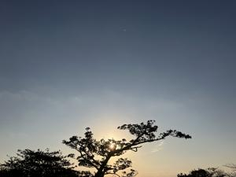
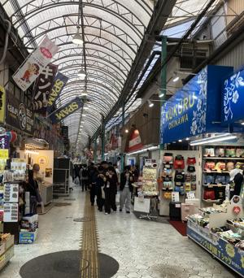

うるがいの話 ある日
最新: ムーチの日【うるがいの話 ある日】とは 一日だけのプログです
『うるがいの話』の最新一日だけのプログで、通信料が少なく経済的だ。カニの画像をクリックすると全ての日付が載る『うるがいの話』サイトを表示します
|
|
【うるがいの話】 うるがい(ｳﾙｶﾞｲ urugai)とは、『もずくがに』の名前でとても大きくなります。 |
|---|---|
|
|
【カミマヤーの話】 猫のことを方言でマヤーといいます。カミマヤー（kamimayaa）とは、神の猫のことです。 |
|
【たながぁの音楽】 たながぁ（ﾀﾅｶﾞｰ tanagaa）とは手長えびのことで、何種類かあり大きいのは車 エビぐらいになります。 |

|
【ぶながぁの話】 ぶながぁ(ﾌﾞﾅｶﾞｰ bunagaa)とは、赤い髪の毛、赤い身体、そして身長は１ｍ２０ｃｍ ぐらい、川の蟹を食べているの目撃された。場所は沖縄県国頭郡大宜味村のと ある村僕の隣近所に住んでいる爺さんから、聞いた話です。 |
|
|
【ギーマの話】 ギーマ(giima)とは、山原の里山に咲くスズランに似た、 花を付けます。実は食べられます、 気が付くと口の周りが紫になっています。 |
2026年01月25日 (日）ムーチの日
16:43

初ムーチーとは何ですか？
沖縄では旧暦の１２月８日に、健康、無病息災を願いムーチーを
食べ厄払いします。子どもの歳の数だけ天井や縁側からムーチー
を吊るしたり、赤ちゃんが生まれ、初めてのムーチーの日を迎え
る家は「初ムーチー」と言い、親戚や近所にムーチーを配ったり
する習慣があります。
ムーチの日は、明日ですが。国際通りのむつみ橋通りにムーチを
買いに行きました。国際通りからむつみ橋通りに入ったのですが
ン？、ヨメがネットで事前に調べていたのに、人が余りいない。
通りの最後になると、月桃の匂いがしてきました。どうやら、通
りを間違えたよです。市場本通りに入ると、大勢の観光客！、そ
して匂いもだんだんと強くなってきます。そしてとうとう５束セ
ットで販売しているお店に着きました。先客は、どんどん買いま
す。並んで、紅芋、黒糖それぞれ２セットずつ買いました。

ジュンク堂書店の百均で３３０円で、駐車を１時間無料にしても
らいました。コドモに１２個、お隣さんに４個、残り４個が家の
もんです。実は昨日も、リュウボウで３個ムーチを買いました。
明日は、家の月桃でヨメが自家製のムーチを作る予定です。

私が小さい頃、親戚のオバーの家で、大釜で沢山のムーチを一緒
に作りましたヨ。多分、砂糖は入っていなかったと思います。